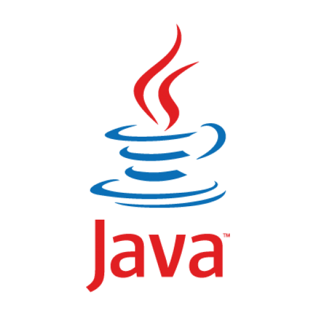

Java es un lenguaje de programación ampliamente utilizado para codificar aplicaciones web. Ha sido una opción popular entre los desarrolladores durante más de dos décadas, con millones de aplicaciones Java en uso en la actualidad. Java es un lenguaje multiplataforma, orientado a objetos y centrado en la red que se puede utilizar como una plataforma en sí mismo. Es un lenguaje de programación rápido, seguro y confiable para codificarlo todo, desde aplicaciones móviles y software empresarial hasta aplicaciones de macrodatos y tecnologías del servidor.
Debido a que Java es un lenguaje versátil y de uso gratuito, crea software localizado y distribuido. Algunos usos comunes de Java incluyen:
Muchos videojuegos, así como juegos para móviles y computadoras, se crean con Java. Incluso los juegos modernos que integran tecnología avanzada, como el machine learning o la realidad virtual, se crean con la tecnología de Java.
Java a menudo se conoce como WORA: escribir una vez y ejecutar en cualquier lugar (por sus siglas en inglés “Write Once and Run Anywhere”), lo que lo hace perfecto para aplicaciones descentralizadas basadas en la nube. Los proveedores de la nube eligen el lenguaje Java para ejecutar programas en una amplia gama de plataformas subyacentes.
Java se usa para motores de procesamiento de datos que pueden trabajar con conjuntos de datos complejos y cantidades masivas de datos en tiempo real.
